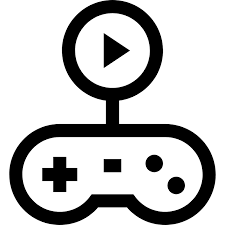
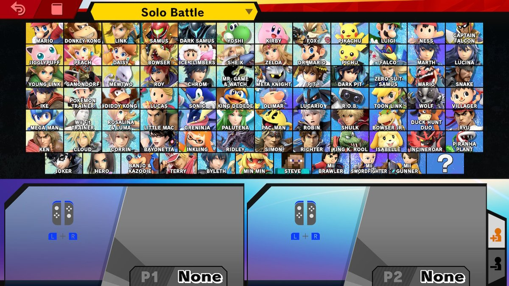
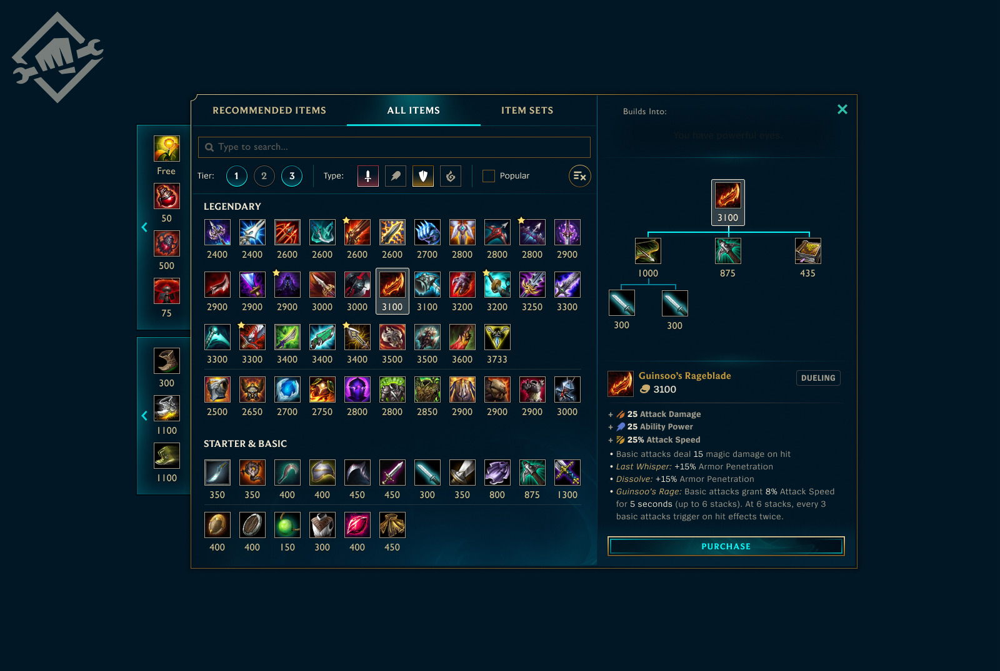

GamePlay
Our guides will start with a basic overview on how the game is played and simple tips and trick to get you acclimated faster. These sections are genuinely more helpfully to players brand new to the game as players that have spent considerable amount of time playing would already know most of this information.

Character Selection
Next up on our guides is the character portion. Not all games have specific characters you can pick that have different abilities but a lot of them do. For the games that do these guides will go over how to play that character and how they compare to others in the game.

Itemization
Lastly on the guides is items. A lot of games nowadays have using items to strengthen your character in game. Wither those items are created and earned by you or just picked up around the map there will be some aspect of items in your game. This part will help you pick the best items for your playstyle and game situation.
